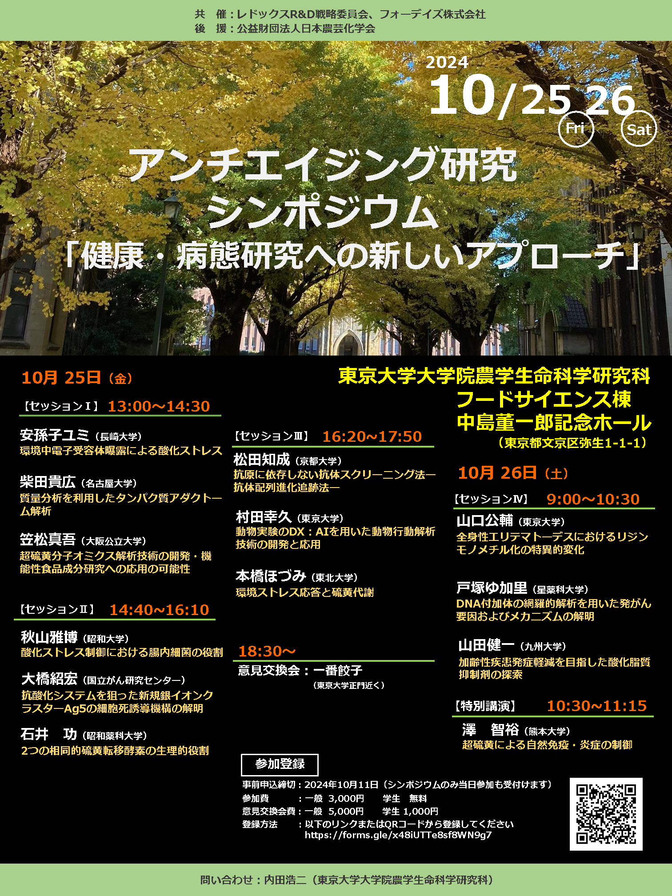
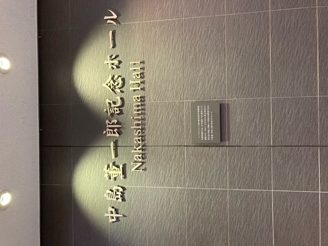
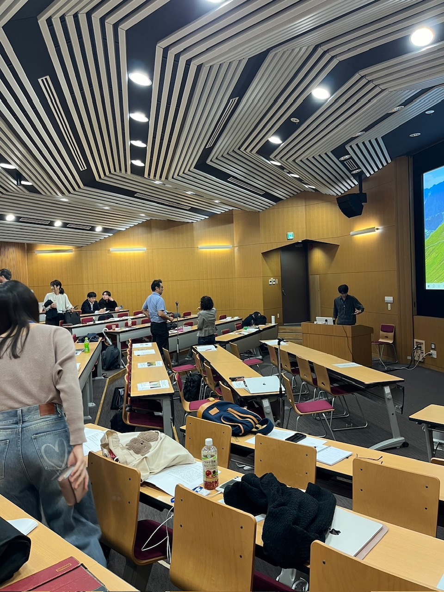
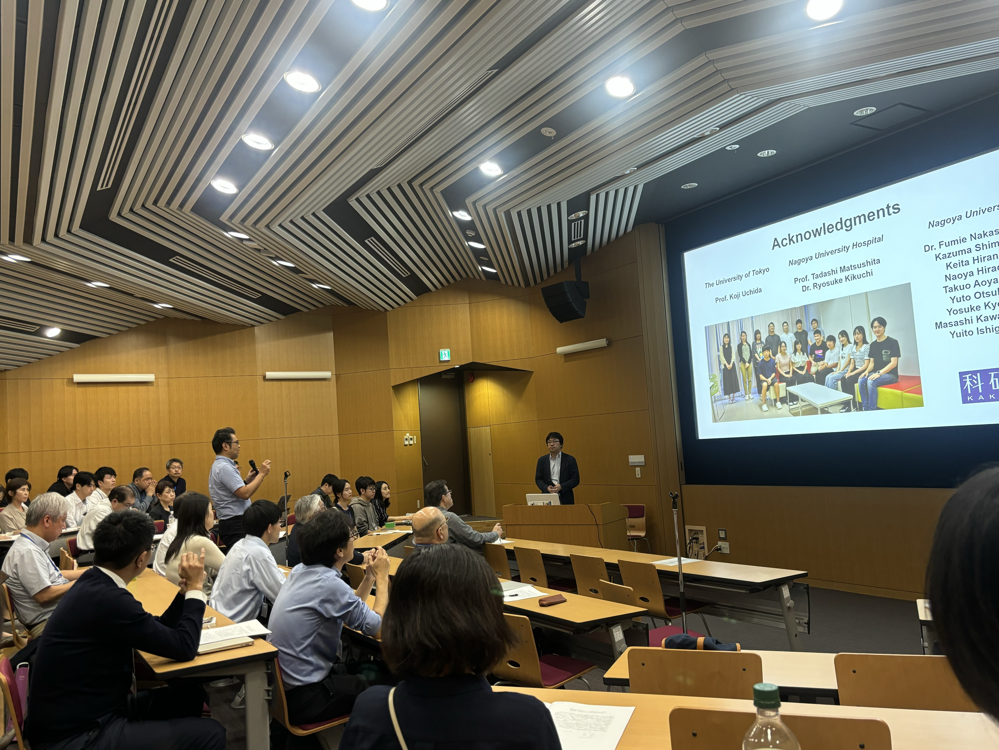
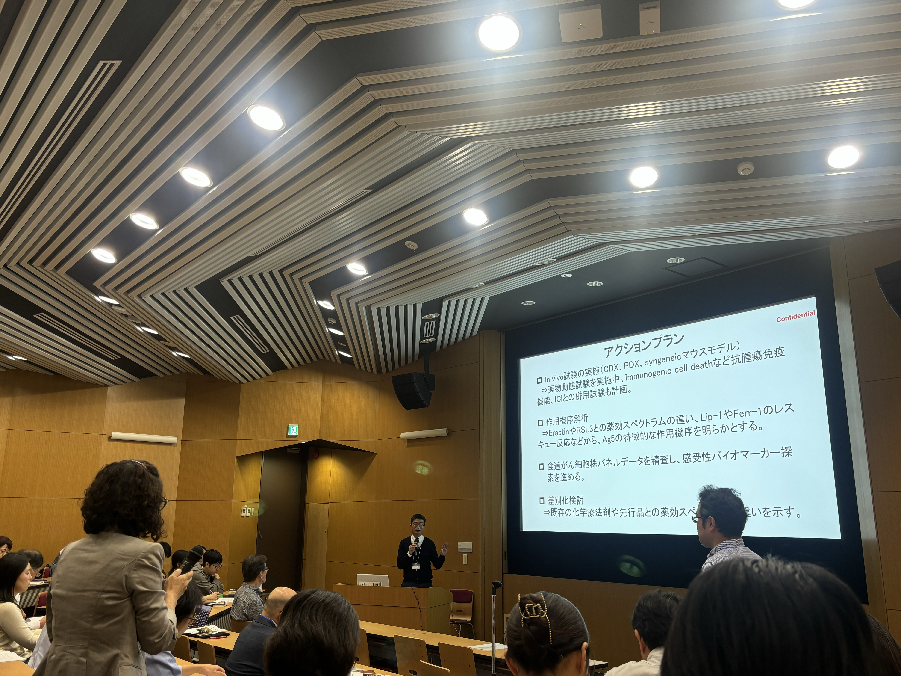
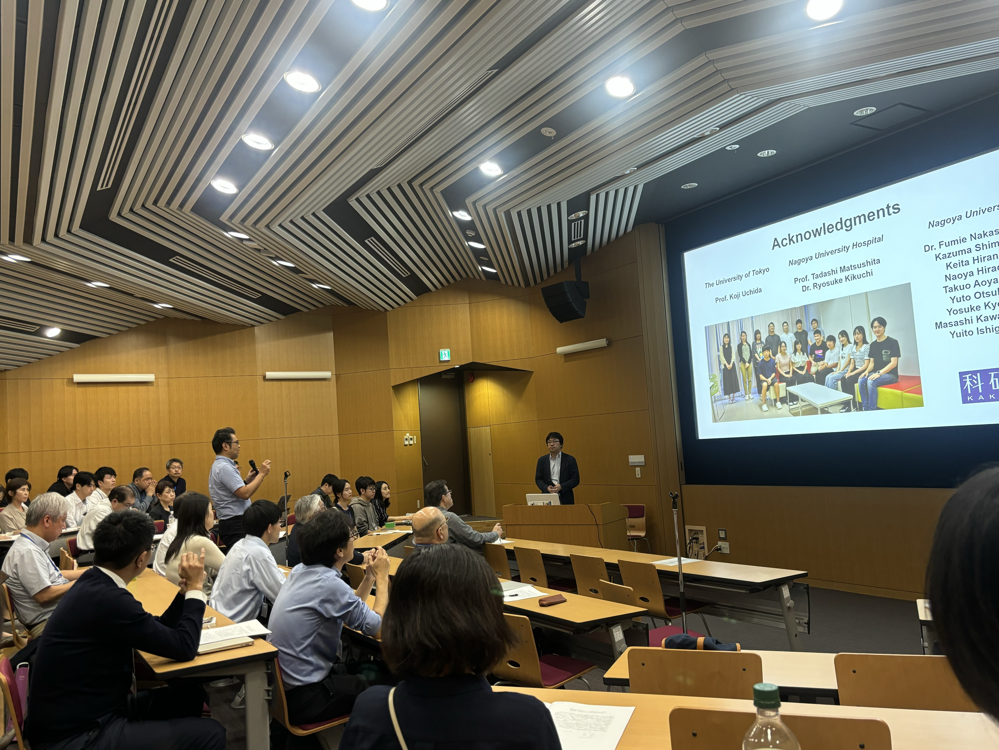
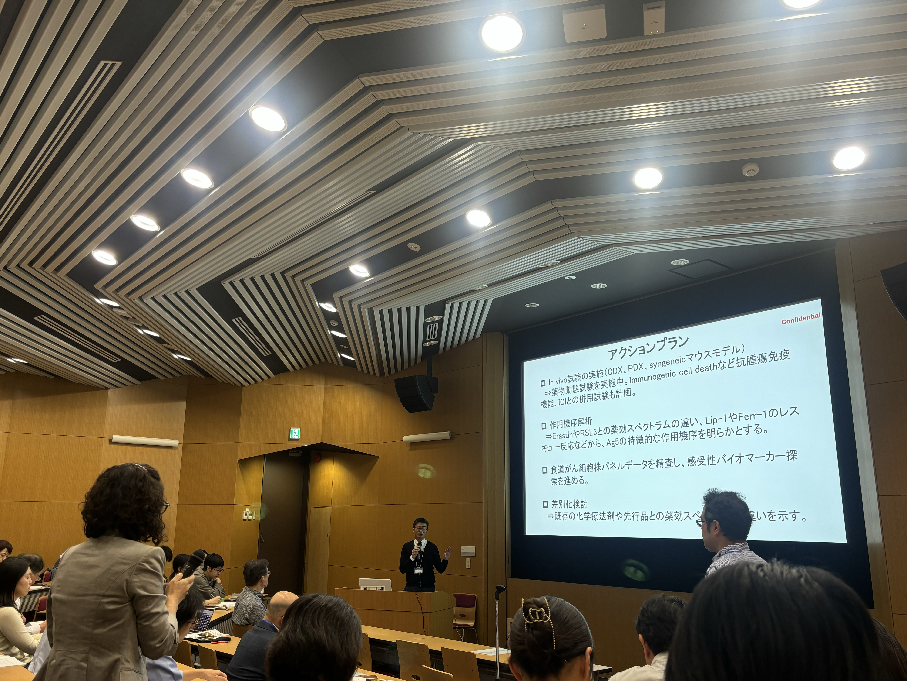
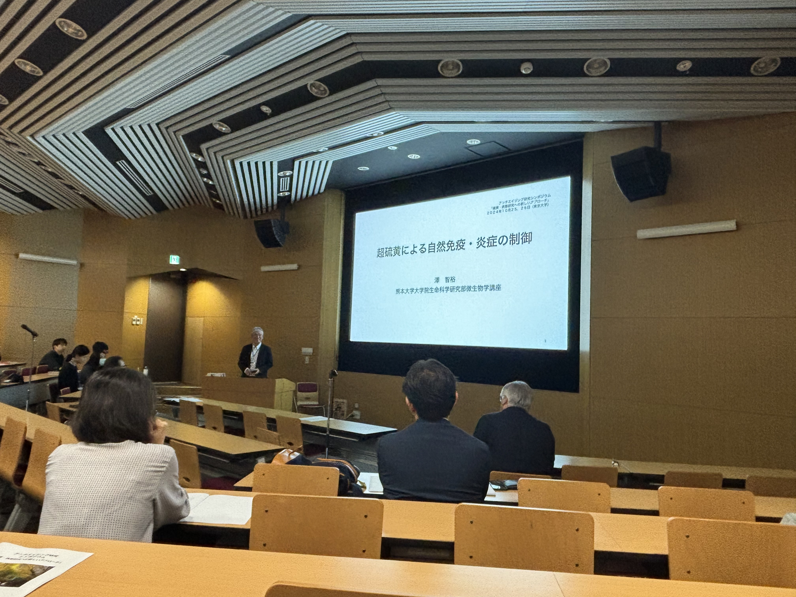
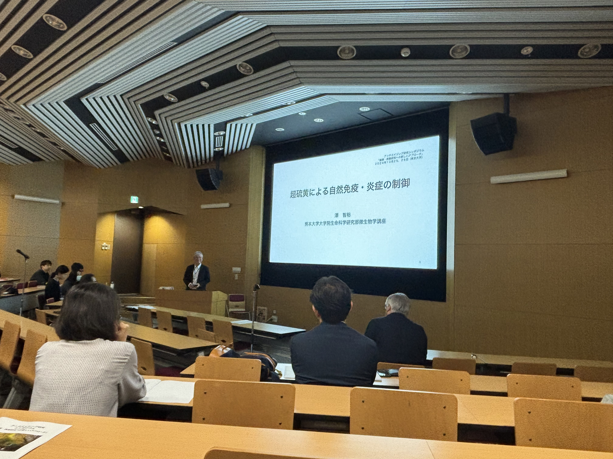

共催シンポジウム
アンチエイジング研究シンポジウム
「健康・病態研究への新しいアプローチ」
概要
日時： 令和6年10月25日（金）・26日（土）
場所： 東京大学農学部 フードサイエンス棟 中島董一郎記念ホール
世話人： 内田 浩二（東京大学大学院農学生命科学研究科）
共催：レドックスR&D 戦略委員会，フォーデイズ株式会社
後援：公益財団法人日本農芸化学会
事前参加登録はこちら 
プログラム
10月25日（金）
12:55~13:00
開会の挨拶
13:00~14:30
【セッションI】
「環境中電子受容体曝露による酸化ストレス」
安孫子ユミ（長崎大学大学院医歯薬学総合研究科）
「質量分析を利用したタンパク質アダクトーム解析」
柴田貴広（名古屋大学大学院生命農学研究科）
「超硫黄分子オミクス解析技術の開発・機能性食品成分研究への応用の可能性」
笠松真吾（大阪公立大学大学院理学研究科）
14:40~16:10
【セッションII】
「酸化ストレス制御における腸内細菌の役割」
秋山雅博（昭和大学臨床薬理研究所）
「抗酸化システムを狙った新規銀イオンクラスターAg5の細胞死誘導機構の解明」
大橋紹宏（国立がん研究センター・先端医療開発センター）
「2つの相同的硫黄転移酵素の生理的役割」
石井 功（昭和薬科大学薬学部）
16:20~17:50
【セッションIII】
「抗原に依存しない抗体スクリーニング法ー抗体配列進化追跡法ー」
松田知成（京都大学大学院工学研究科）
「動物実験のDX：AIを用いた動物行動解析技術の開発と応用」
村田幸久（東京大学大学院農学生命科学研究科）
「環境ストレス応答と硫黄代謝」
本橋ほづみ（東北大学加齢医学研究所・同大学院医学系研究科）
18:30~
意見交換会
一番餃子（東京都文京区本郷5-28-2）
10月26日（土）
9:00~10:30
【セッションIV】
「全身性エリテマトーデスにおけるリジンモノメチル化の特異的変化」
山口公輔（東京大学大学院農学生命科学研究科）
「DNA付加体の網羅的解析を用いた発がん要因およびメカニズムの解明」
戸塚ゆ加里（星薬科大学薬学部）
「加齢性疾患発症軽減を目指した酸化脂質抑制剤の探索」
山田健一（九州大学大学院薬学研究院）
10:30~11:15
【特別講演】
「超硫黄による自然免疫・炎症の制御」
澤 智裕（熊本大学大学院生命科学研究部）
11:15-11:20
閉会の挨拶



 



 
